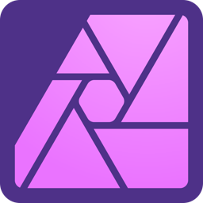

Development of a cross platform mobile app for Te Puna Wānaka, which provides education and courses on Māori, Pasefika & Japanese studies. The app allows students, staff and the Ōtautahi community with a self-guided tour and information through an accessible knowledge base on the various Pouwhenua and Taonga located around the Ara Madras city campus. Aswell information on Te Puna Wānaka and Te Mātauranga Māori.
The app is used as a learning resource for students studying Te Reo Māori courses to learn about the various Māori artwork, carvings and sculptures.
The development took place over an 8-month period using Flutter, a cross-platform software kit, with builds for Android and iOS being publicly available.
Tools suite
Flutter SDK
Dart

VS Code
Firebase
